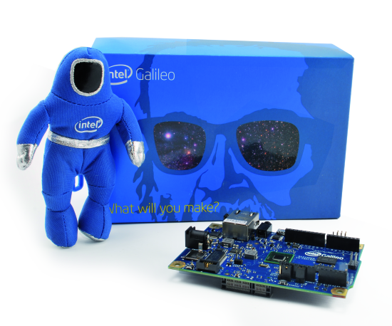
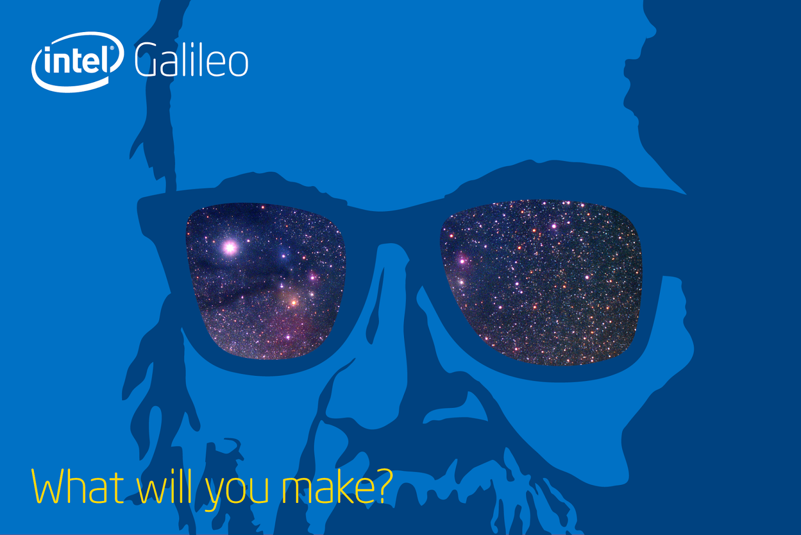
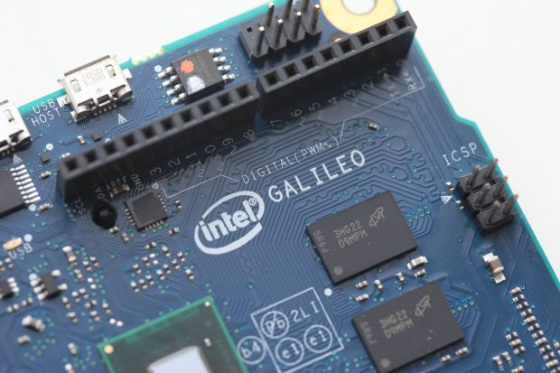
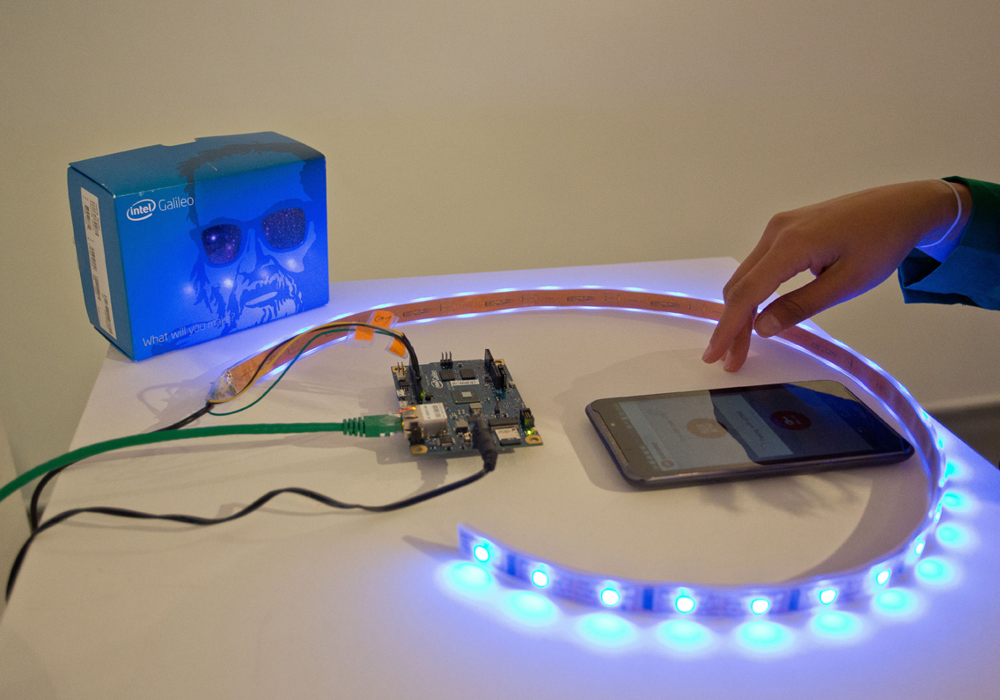
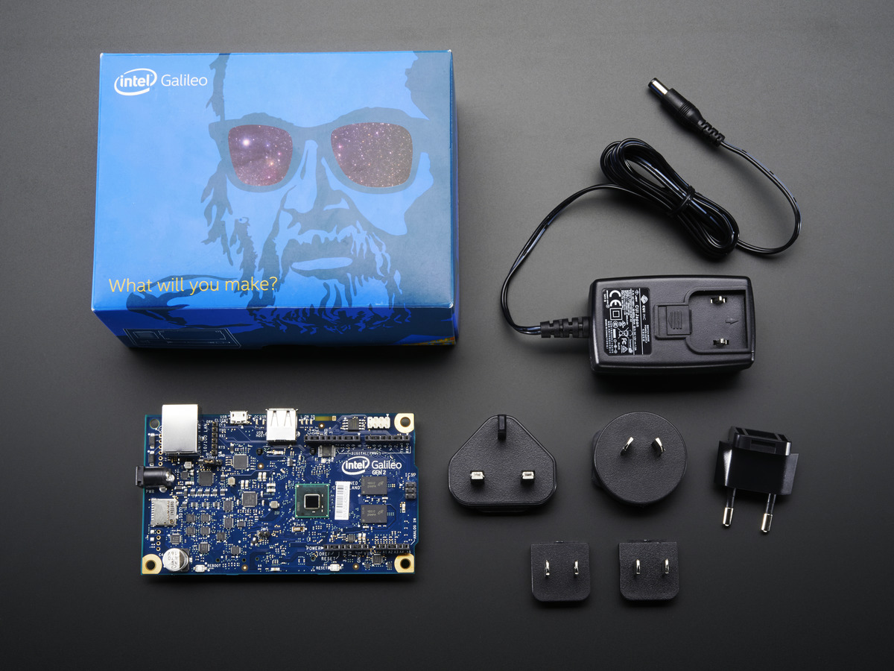
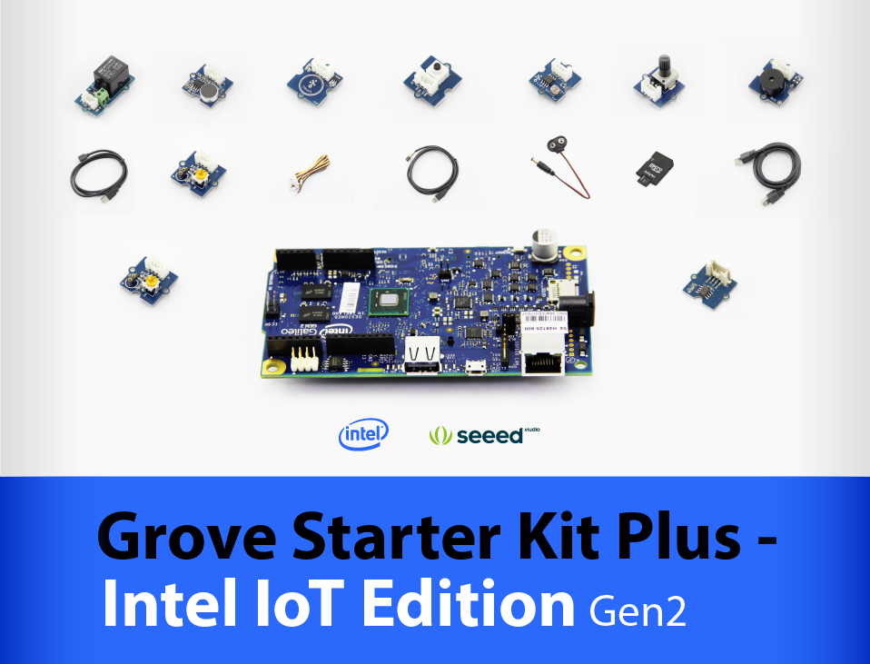
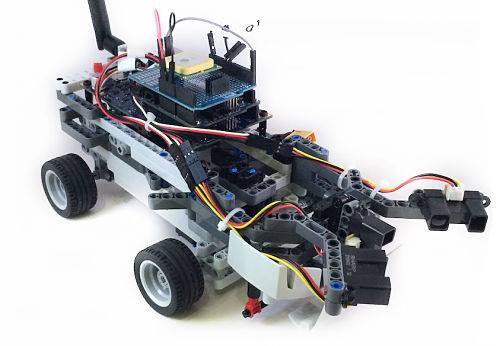
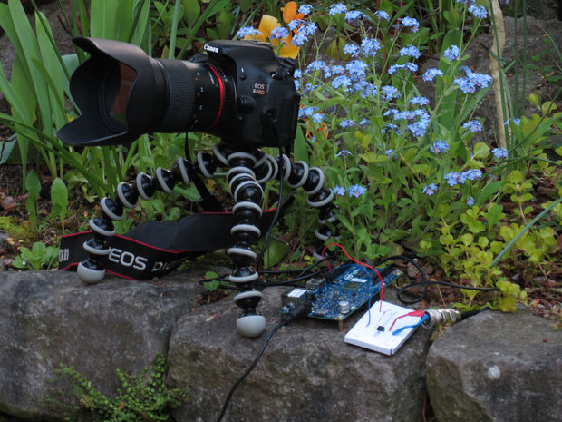

Start making things with these step-by-step instructions, examples, and code samples.
What is Online Ideathon?

Online Ideathon is a National Level innovation education program for school students who have the zeal to create
using the Intel Galileo Board.
Your ideas have to be submitted by 31st of September 2015. If your idea gets selected you shall be called up for
mentoring camps. You shall be given the Galileo boards for implementation of your ideas.
The shortlisted projects will be Showcased at National Science Fair - Intel® TECH Challenge – INDIA in December
2015 Winners from National Fair may even get a chance to represent India at – Intel® Science and Engineering Fair
held in the USA.
Online Ideathon for students
- Beginners Level
- Advanced Level
-
Here’s a presentation to take you on a journey of ideas and innovations … ideas that changed the life as we knew it and innovations that are going to make life better for future gens!

- A project made by fellow school kid that will show you how to blink LEDs and play with them using Galileo Board.
- Get inspired to build what’s next. See what others are doing with Intel Edison technology.
- The Galileo is a remarkable invention by Intel and Arduino, the board works perfectly well with the Arduino ecosystem and its features will lead to groundbreaking Innovations.
- The Intel® Galileo Gen 2 development board is a microcontroller board based on the Intel® Quark™ SoC X1000 application processor, a 32-bit Intel® Pentium® brand system on a chip (SoC).
- Grove Starter Kit Plus - Intel IoT Edition for Intel Galileo Gen 2 Developer Kit is a complete hardware & software solution to help you explore the IoT space and create innovative projects.
- The best way to celebrate the Intel Galileo board is to learn about its applications and see it in action in a variety of projects. From an insect robot controllable wirelessly to a humanoid robot, Galileo can do it all.
- Shoot a timelapse-video with the Intel Galileo Gen 2 or a similar board. We will use a 2.5mm jack to connect the board to a Canon DSLR and then control the shutter with our board.